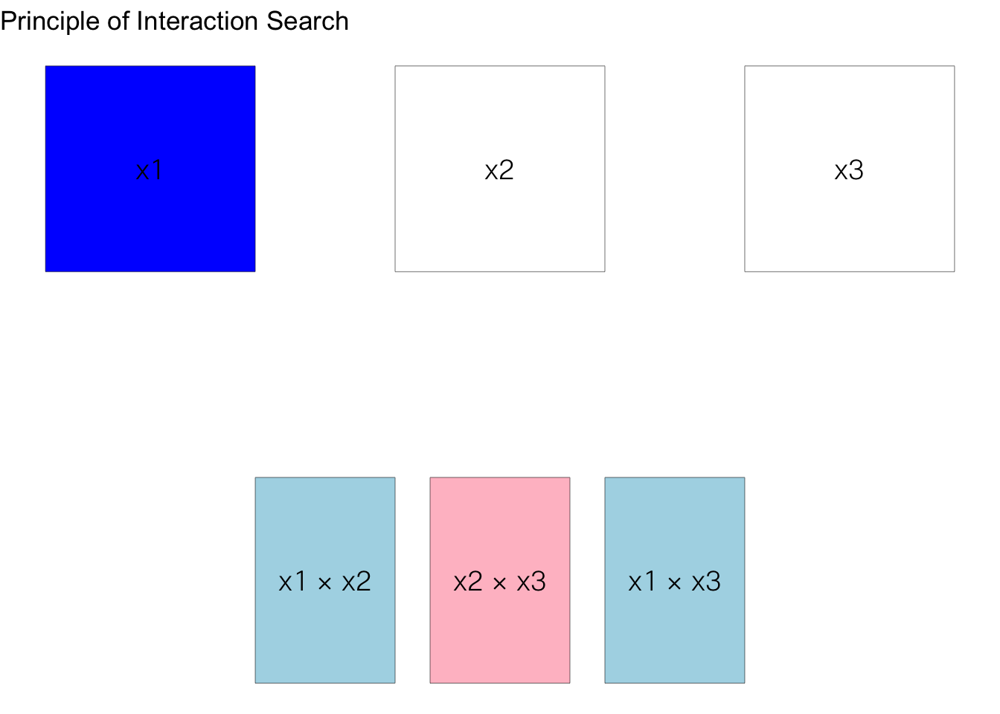
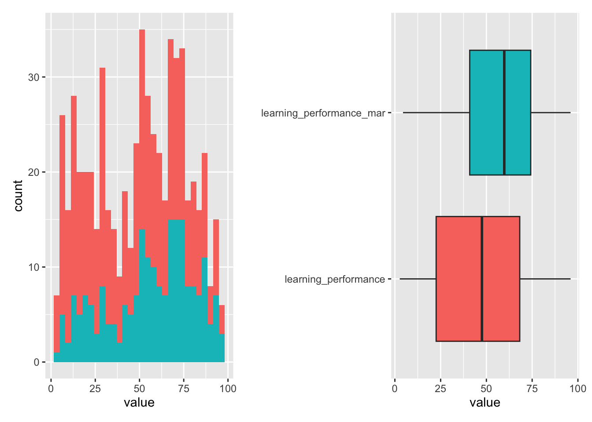
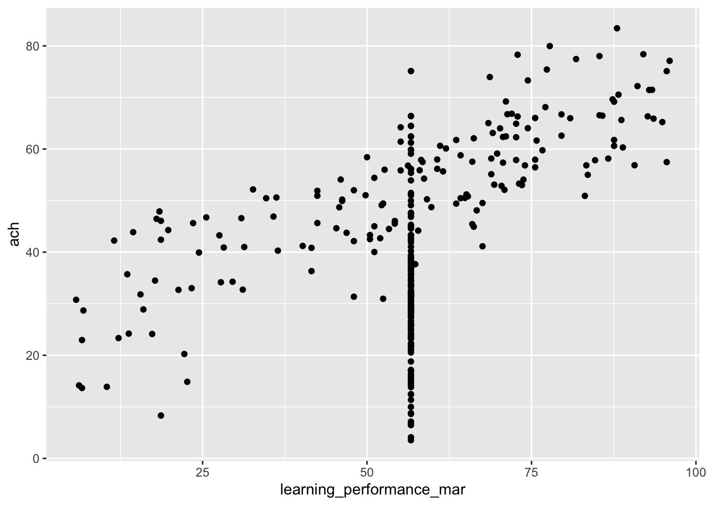
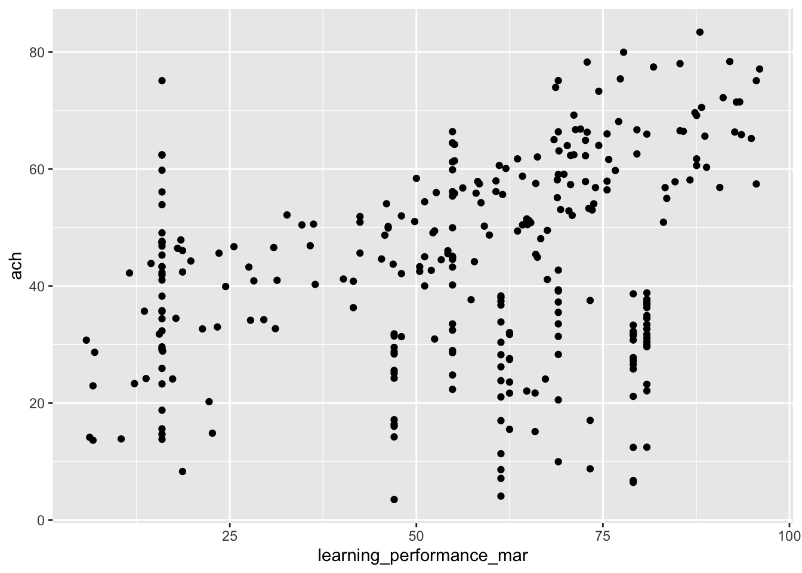

── Attaching core tidyverse packages ──────────────────────── tidyverse 2.0.0 ──
✔ dplyr 1.1.4 ✔ readr 2.1.5
✔ forcats 1.0.0 ✔ stringr 1.5.1
✔ ggplot2 3.5.1 ✔ tibble 3.2.1
✔ lubridate 1.9.3 ✔ tidyr 1.3.1
✔ purrr 1.0.2
── Conflicts ────────────────────────────────────────── tidyverse_conflicts() ──
✖ dplyr::filter() masks stats::filter()
✖ dplyr::lag() masks stats::lag()
ℹ Use the conflicted package (<http://conflicted.r-lib.org/>) to force all conflicts to become errors
── Attaching packages ────────────────────────────────────── tidymodels 1.2.0 ──
✔ broom 1.0.6 ✔ rsample 1.2.1
✔ dials 1.3.0 ✔ tune 1.2.1
✔ infer 1.0.7 ✔ workflows 1.1.4
✔ modeldata 1.4.0 ✔ workflowsets 1.1.0
✔ parsnip 1.2.1 ✔ yardstick 1.3.1
✔ recipes 1.1.0
── Conflicts ───────────────────────────────────────── tidymodels_conflicts() ──
✖ scales::discard() masks purrr::discard()
✖ dplyr::filter() masks stats::filter()
✖ recipes::fixed() masks stringr::fixed()
✖ dplyr::lag() masks stats::lag()
✖ yardstick::spec() masks readr::spec()
✖ recipes::step() masks stats::step()
• Dig deeper into tidy modeling with R at https://www.tmwr.org
Rows: 395 Columns: 33
── Column specification ────────────────────────────────────────────────────────
Delimiter: ";"
chr (17): school, sex, address, famsize, Pstatus, Mjob, Fjob, reason, guardi...
dbl (16): age, Medu, Fedu, traveltime, studytime, failures, famrel, freetime...
ℹ Use `spec()` to retrieve the full column specification for this data.
ℹ Specify the column types or set `show_col_types = FALSE` to quiet this message.Feature Engineering
1. ความหมายความสำคัญของ Feature Engineering
Feature Engineering คือกระบวนการแปลงหรือปรับแต่งข้อมูลดิบ (raw data) ให้อยู่ในรูปแบบที่เหมาะสมสำหรับการสร้างโมเดลการเรียนรู้ของเครื่อง
การสร้างโมเดล ML หากไม่มีการเตรียมข้อมูลที่ดี โมเดลก็อาจไม่สามารถเรียนรู้รูปแบบที่สำคัญจากข้อมูลได้อย่างมีประสิทธิภาพ
Feature Engineering มีความสำคัญดังนี้
เพิ่มประสิทธิภาพของโมเดล
ลดข้อจำกัดของข้อมูล
ช่วยให้การแปลความหมายชัดเจนขึ้น เข้าใจได้มากขึ้น หรือช่วยให้เราพบ insight ที่ซ่อนอยู่ในข้อมูล
- ควรทำ feature engineering ตอนไหน?
1.1 หลักการสำคัญในการทำ feature engineering
ทำความเข้าใจข้อมูลเสมอ ได้แก่ ทราบสถานะของข้อมูล ทำความเข้าใจการแจกแจงของข้อมูล เข้าใจความสัมพันธ์เบื้องต้นระหว่างตัวแปร
มีเป้าหมายในการดำเนินงานที่ชัดเจน มีตัวชี้วัด
ระวังการเกิดปัญหา data leakage : กระบวนการนี้ทำบน training data เท่านั้น
2. เตรียมชุดข้อมูล
3. ประเภทของ Feature Engineering
Encoding Categorical Variables
Transforming Numerical Variables
Interaction Terms
Handling Missing Data
4. Encoding Categorical Variables
วัตถุประสงค์คือการแปลงข้อมูลจัดประเภทให้อยู่ในรูปแบบที่สามารถนำไปวิเคราะห์ได้ด้วยโมเดลการเรียนรู้ของเครื่อง
Note:
step_discretize_cart()และstep_discretize_xgb()ใช้การแบ่งกลุ่มของตัวแปรเชิงปริมาณให้เป็นกลุ่มหรือตัวแปรประเภท โดยใช้โมเดล Classification and Regression Trees (CART) และ Extreme Gradient Boosting (XGBoost) ตามลำดับ หลักการทำงานคร่าว ๆ ทั้งสองอัลกอริทึมเป็นกลุ่ม supervised discretization ใช้การเรียนรู้ของเครื่องช่วยแบ่งตัวแปรเชิงปริมาณให้ได้ผลลัพธ์เป็นตัวแปรจัดประเภทที่มีความสัมพันธ์กับตัวแปรตามมากที่สุด ทั้งสองฟังก์ชันสามารถ tune ค่า hyperparameter ได้เพื่อให้ได้ผลลัพธ์ที่ต้องการstep_lencode_glm()เป็นฟังก์ชันในกลุ่ม Supervised Factor Conversion มีหน้าที่แปลง Factor ให้เป็นตัวเลขโดยใช้โมเดล Generalized Linear Model (GLM) เราอาจอธิบายหลักการทำงานคร่าว ๆ ได้ดังนี้
สร้าง glm ที่ทำนาย outcome ของโมเดลกับ predictor ที่เป็น factor
ใช้ค่าสัมประสิทธิ์ของโมเดลที่ได้จาก glm เป็นคะแนนของระดับปัจจัยแต่ละระดับ
step_lencode_bayes()หลักการเดียวกับ glm แต่เปลี่ยนการประมาณค่าพารามิเตอร์ในโมเดลเป็น bayesian glm ผลลัพธ์ที่ได้จะมีความแกร่งว่าการใช้ glm แบบปกติโดยเฉพาะกรณีขนาดตัวอย่างเล็ก ความแตกต่างอีกส่วนนึงที่น่าสนใจคือstep_lencode_bayes()จะให้ solution ที่แตกต่างกันไปในแต่ละครั้ง เนื่องจากการประมาณค่าพารามิเตอร์ใช้ Markov Chain Monte Carlo (MCMC) ที่อิงกับตัวเลขสุ่มstep_lencode_mixed()หลักการเดียวกับ glm แต่ใช้ mixed-effects model แทน เหมาะกับข้อมูลที่มีโครงสร้างแบบ hierarchical หรือ panel data
# A tibble: 314 × 33
school sex age address famsize Pstatus Medu Fedu Mjob Fjob reason
<fct> <fct> <dbl> <fct> <fct> <fct> <fct> <fct> <dbl> <fct> <fct>
1 GP F 17 U GT3 A 4 4 9.82 teacher home
2 GP M 17 U GT3 T 3 2 11.0 services course
3 GP F 15 R GT3 T 2 4 11.0 health course
4 GP F 16 U GT3 T 2 2 11.0 services home
5 GP F 15 U GT3 T 2 3 9.82 other other
6 GP F 15 U LE3 A 4 3 9.82 other course
7 GP F 15 U GT3 T 4 4 11.0 teacher other
8 GP F 15 R GT3 T 1 1 9.82 other reputa…
9 GP F 16 U GT3 T 3 4 9.24 other course
10 GP F 15 U LE3 T 3 2 11.0 other reputa…
# ℹ 304 more rows
# ℹ 22 more variables: guardian <fct>, traveltime <fct>, studytime <fct>,
# failures <dbl>, schoolsup <fct>, famsup <fct>, paid <fct>,
# activities <fct>, nursery <fct>, higher <fct>, internet <fct>,
# romantic <fct>, famrel <fct>, freetime <fct>, goout <fct>, Dalc <fct>,
# Walc <fct>, health <fct>, absences <dbl>, G1 <dbl>, G2 <dbl>, G3 <dbl>step_woe()ใช้ทำ weight of evidence (WOE) หรือ information value (IV) ในการแปลง factor ให้เป็นตัวเลข วิธีการนี้ใช้กับ binary-classification taskขั้นตอนของวิธีการนี้คือ
คำนวณค่า WOE ซึ่งมีค่าเท่ากับ log(odds) ของการเกิด outcome ที่สนใจจำแนกตาม level ของ factor ที่ต้องการแปลง หากใน level ไหนของ factor ไม่มี event หรือ non-event จะใช้เทคนิค Laplace Smoothing เพื่อเลี่ยงการหารด้วย 0
แทน factor level แต่ละตัวด้วย woe value
5. Transforming Numerical Variables
คือการแปลงคะแนนของตัวแปรเชิงปริมาณให้มีลักษณะการแจกแจงหรืออยู่ในรูปแบบที่เหมาะสำหรับการนำไปวิเคราะห์ด้วยโมเดลการเรียนรู้ของเครื่อง หรือในบางกรณีเป็นการสร้างตัวแปรใหม่เพื่อเพิ่มประสิทธิภาพการเรียนรู้ของโมเดล
Note:
step_pls()คือ Partial Least Squares (PLS) ซึ่งเป็นเทคนิค supervised dimensionality reduction และ feature extraction เพื่อสร้างตัวแปรใหม่ที่เป็น linear combination ของตัวแปรเดิมที่มีอยู่ (องค์ประกอบ) ที่มีความสัมพันธ์กับ outcome มากที่สุด
จะใช้ฟังก์ชันนี้ได้จะต้องมี library-mixOmics ติดตั้งก่อน ซึ่ง library ดังกล่าวอยู่ใน Bioconductor server สามารถติดตั้งได้ดังนี้
# A tibble: 314 × 31
school sex address famsize Pstatus Medu Fedu Mjob Fjob reason guardian
<fct> <fct> <fct> <fct> <fct> <fct> <fct> <fct> <fct> <fct> <fct>
1 GP F U GT3 A 4 4 other teac… home mother
2 GP M U GT3 T 3 2 servi… serv… course mother
3 GP F R GT3 T 2 4 servi… heal… course mother
4 GP F U GT3 T 2 2 servi… serv… home mother
5 GP F U GT3 T 2 3 other other other father
6 GP F U LE3 A 4 3 other other course mother
7 GP F U GT3 T 4 4 servi… teac… other father
8 GP F R GT3 T 1 1 other other reput… mother
9 GP F U GT3 T 3 4 at_ho… other course mother
10 GP F U LE3 T 3 2 servi… other reput… mother
# ℹ 304 more rows
# ℹ 20 more variables: traveltime <fct>, studytime <fct>, schoolsup <fct>,
# famsup <fct>, paid <fct>, activities <fct>, nursery <fct>, higher <fct>,
# internet <fct>, romantic <fct>, famrel <fct>, freetime <fct>, goout <fct>,
# Dalc <fct>, Walc <fct>, health <fct>, G3 <dbl>, PLS1 <dbl>, PLS2 <dbl>,
# PLS3 <dbl>step_ica()เป็น feature extraction ในทำนองเดียวกับ pca เรียกชื่อเต็มว่า Independent Component Analysis (ICA) เทคนิคนี้จัดอยู่ในกลุ่ม unsupervised learning ในกลุ่ม dimensionality reduction หลักการคร่าว ๆ ของอัลกอริทึมนี้คือ สร้าง linear combination ที่เรียกว่า independent components การสร้าง ICs เหล่านี้จะมีวัตถุประสงค์คือพยายามให้แต่ละ ICs เป็นอิสระต่อกันมากที่สุด
6. Interaction Terms
การเพิ่ม interaction term ในโมเดลมีประโยชน์อย่างมากโดยเฉพาะใน linear model เพราะช่วยเพิ่มโอกาสการพบความสัมพันธ์แบบ non-linear ระหว่างตัวแปร ช่วยเพิ่มประสิทธิภาพการเรียนรู้ของโมเดล และยังช่วยให้สามารถอธิบายความสัมพันธ์ได้ลึกมากขึ้น
หลักการหา interaction terms สามารถทำได้หลายวิธีการ ตั้งแต่วิธีการที่อิงทฤษฎี (theory-driven) ไปจนถึงวิธีการที่ใช้ข้อมูลเป็นฐาน (data-driven)
- theory-driven: ระบุ interaction term ด้วยทฤษฎี/ความรู้ความเข้าใจใน domain ของปัญหา เช่น การทำนายผลการเรียนของนักเรียน ปฏิสัมพันธ์ระหว่างเวลาที่ใช้ในการทบทวนบทเรียน กับ ความถี่ของการอภิปรายกับเพื่อนหรือครู อาจมีความสำคัญต่อการทำนายผลการเรียนดังกล่าวให้ดีขึ้น
วิธีการนี้โดยเฉพาะทางการศึกษาจำเป็นที่จะต้องมีทฤษฎีหรือเหตุผลที่แข็งแกร่ง ชัดเจน รองรับการสร้าง interaction term ดังกล่าว
- ใช้หลักการระบุ interaction (Principle of Interaction Search ของ Wu and Hamada (2011)
concept หลักของหลักการนี้ได้แก่
interaction hierarchy: interaction ที่มีระดับสูงกว่า (higher degree of interaction) มีโอกาสน้อยลงที่จะอธิบาย variation ในตัวแปรตาม
effect sparsity: มีเพียงส่วนน้อยของ effects ที่เป็นไปได้ทั้งหมดเท่านั้นที่อธิบาย variation ในตัวแปรตามได้อย่างมีนัยสำคัญ
effect heredity: interaction terms จะถูกพิจารณาต่อเมื่อ terms ที่มีระดับต่ำกว่า (preceding terms) ที่มีผลในการอธิบาย variation ในตัวแปรตามได้อย่างมีนัยสำคัญ
Strong Heredity: interaction term จะถูกนำมาพิจารณาต่อเมื่อ main effects ทั้งหมดของตัวแปรที่เกี่ยวข้องใน interaction นั้น ๆ สามารถอธิบาย variation ได้อย่างมีนัยสำคัญ ตัวอย่างเช่น interaction จะถูกพิจารณาต่อเมื่อ main effect ของ และ มีนัยสำคัญทั้งคู่
Weak Heredity: interaction term จะถูกนำมาพิจารณาต่อเมื่อ main effect อย่างน้อยหนึ่งตัวของตัวแปรที่เกี่ยวข้องใน interaction นั้น ๆ สามารถอธิบาย variation ได้อย่างมีนัยสำคัญ

ใช้โมเดลที่จับ interaction โดยอัตโนมัติ เช่น tree-based model หรือ neural network โดยสามารถใช้ร่วมกับ XAI เช่น Partial Dependence Plot (PDP) หรือ SHAP value ซึ่งจะช่วยให้ผู้วิเคราะห์สามารถหาและแปลความหมาย interaction term ที่สำคัญ ได้โดยใช้ข้อมูลเป็นฐาน
อาจใช้ regularized regression เช่น LASSO regression เข้ามาช่วยเลือก interaction term ที่สำคัญได้ วิธีการนี้จะต้องใช้การสร้าง term interaction ทั้งหมดที่คิดว่าจะเป็นไปได้ก่อน จากนั้นใช้ penalized regression ช่วยเลือก
7. Handling Missing Data
ปัญหา missing value เป็นปัญหาที่พบบ่อยและอาจสร้างผลกระทบอย่างมากต่อโมเดลการเรียนรู้ของเครื่อง การจัดการ missing value มีหลายวิธีการ แต่ละวิธีการจะมีข้อดี ข้อจำกัดและเหมาะกับบริบทการใช้งานที่แตกต่างกัน เราอาจจำแนกบริบทการใช้งานได้เป็น 2 ลักษณะ
การจัดการ missing ใน inferential stat
เน้นอธิบาย เน้นอนุมานไปยังประชากร/กลุ่มเป้าหมาย
พยายามรักษาความน่าเชื่อถือ/ความถูกต้องของการอนุมาน
เน้นวิธีการ impute missing ที่สามารถ capture ความไม่แน่นอนของการทดแทนค่าสูญหายให้ได้ เช่น MI
ปัจจัยสำคัญที่ใช้เลือกวิธีการ impute คือ กลไกการสูญหายของข้อมูล
ในการสร้าง supevised learning model
เน้นสร้างโมเดลที่มีความแม่นยำ
การจัดการ missing มีความสำคัญเพียงในขั้นตอน preprocessing เพื่อสร้างโมเดลทำนายที่ดีที่สุด
เนื่องจากเน้นผลการทำนายที่ดี วิธีการที่ใช้จึงเน้นการทดแทนค่าสูญหายที่แม่นยำและทำให้โมเดลมีค่าทำนายที่แม่นยำที่สุด
ไม่สนใจเรื่องการอนุมานหรืออธิบายความสัมพันธ์ในประชากร
Rows: 387 Columns: 5
── Column specification ────────────────────────────────────────────────────────
Delimiter: ","
chr (3): ontime_class, engage, practice
dbl (2): ach, learning_performance
ℹ Use `spec()` to retrieve the full column specification for this data.
ℹ Specify the column types or set `show_col_types = FALSE` to quiet this message.ลองสร้างการสูญหายใช้ตัวแปร learning_performance
`stat_bin()` using `bins = 30`. Pick better value with `binwidth`.Warning: Removed 172 rows containing non-finite outside the scale range
(`stat_bin()`).Warning: Removed 172 rows containing non-finite outside the scale range
(`stat_boxplot()`).


8. แนวทางการทำ feature engineering ที่เหมาะสม
ป้องกัน data leakage
แยก train/test เสมอ
เก็บ test data ไว้สำหรับ final model เท่านั้น
ใช้ Cross-validation สำหรับปรับแต่ง hyperparameter ที่เหมาะสม
ลำดับขั้นของการทำ feauture engineering ที่แตกต่างกันมีผลต่อประสิทธิภาพของโมเดล พิจารณาการดำเนินงานต่อไปนี้
step_interact(),step_lencode_glm(),step_normalized()และstep_impute_knn()ควรดำเนินการลำดับไหนก่อนหลังตรวจสอบผลลัพธ์ด้วยวิธีการที่หลากหลาย
Statistical Approached
Data Visualization